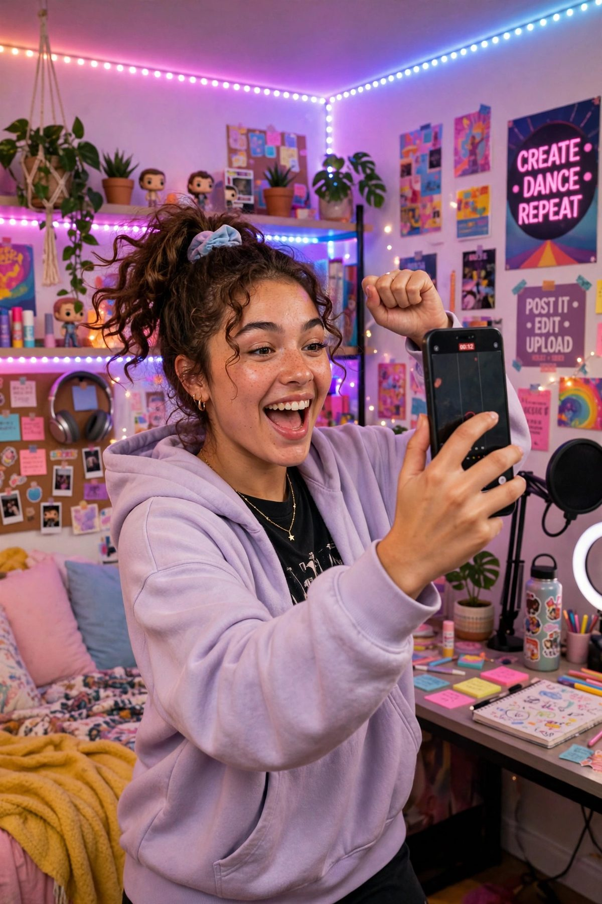

Important: This is an informational guide site. We do not provide, host or link to any modified APK. For the real app, install official CapCut from Google Play or the App Store — see our official install guide.
Free video editing tools
Aspect Ratio Calculator
Presets for TikTok, Reels, Shorts and YouTube. Enter one side and get the matching resolution instantly.
Bitrate & Export Size Calculator
Work out how big your exported video will be from its length and bitrate — or the bitrate for a target size.
Caption Timing Helper
Paste your script and split it into timed caption lines with start and end timestamps, ready to use.
Template Idea Generator
Pick a niche and a mood and get a complete edit idea: hook, style, transitions and music vibe.
CapCut guides
 What Is CapCut Mod APK?What a "mod APK" really is, what it promises, and what it actually changes.
What Is CapCut Mod APK?What a "mod APK" really is, what it promises, and what it actually changes. CapCut Premium vs FreeEvery premium feature compared with the free version, and when paying makes sense.
CapCut Premium vs FreeEvery premium feature compared with the free version, and when paying makes sense. Is CapCut Mod APK Safe?Malware, account bans, missing updates and legal risk — explained plainly.
Is CapCut Mod APK Safe?Malware, account bans, missing updates and legal risk — explained plainly. How to Install CapCut OfficiallyGet the real CapCut from Google Play or the App Store in under two minutes.
How to Install CapCut OfficiallyGet the real CapCut from Google Play or the App Store in under two minutes. Best CapCut Templates in 2026The template styles dominating feeds in 2026 and how to use them well.
Best CapCut Templates in 2026The template styles dominating feeds in 2026 and how to use them well. Auto Captions in CapCutTurn speech into accurate, stylish captions automatically.
Auto Captions in CapCutTurn speech into accurate, stylish captions automatically. Keyframe Animation in CapCutAnimate text, stickers and clips with keyframes, step by step.
Keyframe Animation in CapCutAnimate text, stickers and clips with keyframes, step by step. CapCut Transitions TutorialCuts, wipes, zooms and glitch transitions — when to use each one.
CapCut Transitions TutorialCuts, wipes, zooms and glitch transitions — when to use each one. Best Video Quality SettingsResolution, frame rate and bitrate settings that keep your video sharp.
Best Video Quality SettingsResolution, frame rate and bitrate settings that keep your video sharp. Best Export Settings in CapCutExport settings for TikTok, Reels and YouTube without losing quality.
Best Export Settings in CapCutExport settings for TikTok, Reels and YouTube without losing quality.
CapCut for TikTokEdit vertical videos that hold attention from the first second. CapCut for Instagram ReelsReels-ready edits: pacing, hooks, captions and safe zones.
CapCut for Instagram ReelsReels-ready edits: pacing, hooks, captions and safe zones. Text Effects in CapCutAnimated titles, kinetic type and text that matches your beat.
Text Effects in CapCutAnimated titles, kinetic type and text that matches your beat. Background Removal in CapCutRemove backgrounds with auto cutout, custom cutout and chroma key.
Background Removal in CapCutRemove backgrounds with auto cutout, custom cutout and chroma key. Speed Ramping in CapCutSpeed ramps and slow motion that feel smooth, not choppy.
Speed Ramping in CapCutSpeed ramps and slow motion that feel smooth, not choppy. Filters and Effects in CapCutFilters, effects and adjustments — and how not to overdo them.
Filters and Effects in CapCutFilters, effects and adjustments — and how not to overdo them. Audio Editing in CapCutMusic, voiceovers, fades and sound effects that lift your edit.
Audio Editing in CapCutMusic, voiceovers, fades and sound effects that lift your edit. CapCut vs KineMasterTwo popular mobile editors compared feature by feature.
CapCut vs KineMasterTwo popular mobile editors compared feature by feature. CapCut for BeginnersFrom install to your first finished video in ten minutes.
CapCut for BeginnersFrom install to your first finished video in ten minutes. Trending Edits TutorialHow viral edit styles are built — and how to make your own version.
Trending Edits TutorialHow viral edit styles are built — and how to make your own version.